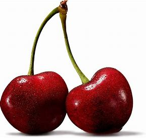
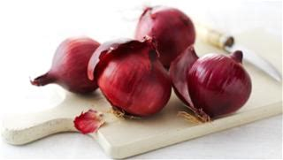
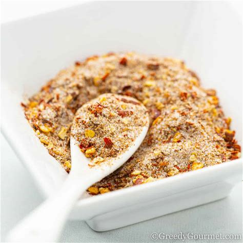

.jpeg)
Fresh Garden Salad
Preparation Time: 15 minutes
Ingredients
 1 cup mixed greens (lettuce, arugula, spinach)
1 cup mixed greens (lettuce, arugula, spinach)
 1/2 cucumber, sliced
1/2 cucumber, sliced
 1/2 bell pepper, chopped
1/2 bell pepper, chopped

1/4 cup cherry tomatoes, halved
1/4 cup shredded carrots

1/4 cup sliced red onion
 2 tbsp olive oil
2 tbsp olive oil
 1 tbsp apple cider vinegar
1 tbsp apple cider vinegar

Salt and pepper to taste
Steps to Make
- Wash and dry all vegetables thoroughly.
- Slice and chop the vegetables as listed.
- In a large salad bowl, combine the mixed greens, cucumber, bell pepper, tomatoes, carrots, and red onion.
- In a small bowl, whisk together olive oil, apple cider vinegar, salt, and pepper.
- Pour the dressing over the salad and toss gently to combine.
- Serve immediately and enjoy!
Health Benefits
- Rich in vitamins and minerals, providing a nutrient boost.
- High in fiber, promoting good digestive health.
- Low in calories, making it a great option for weight management.
- Contains healthy fats from olive oil, beneficial for heart health.